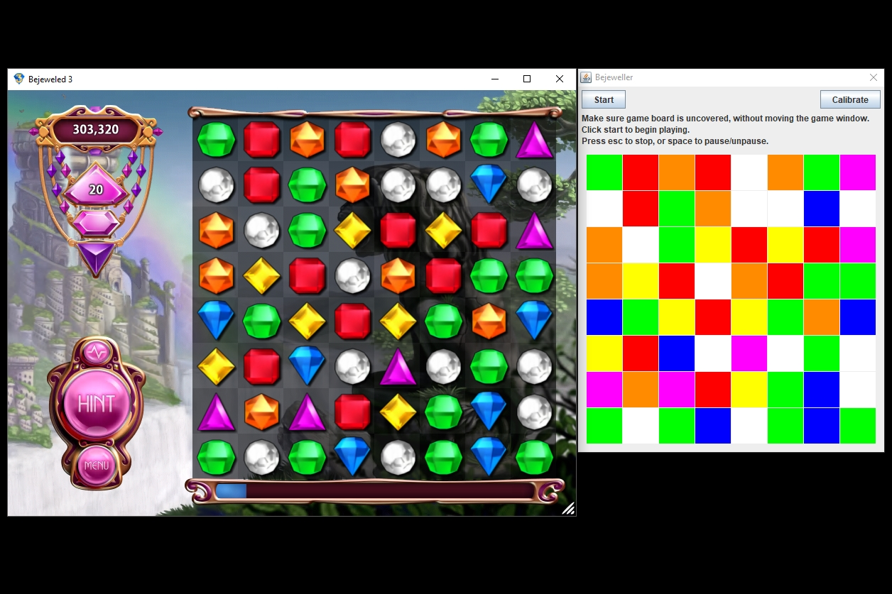
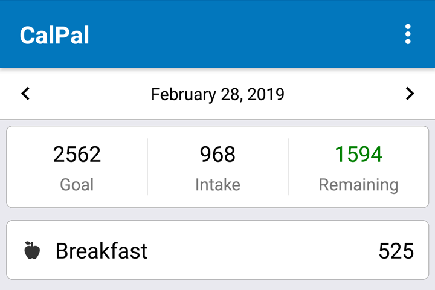

Work
This is a selection of my freelance work and personal projects. For my full work experience, please see my LinkedIn profile.

Stargazing App
Unity
The stargazing app is a cross-platform mobile and desktop app in development for the University of Manitoba's STEAM initiative. Our aim is to preserve legends about the stars from around the world, and to share folklore that isn't as well-known as that of Greek and Roman mythology.
On mobile devices, the app can be controlled using the device gyroscope, allowing the user to point their phone at the night sky and learn about what they can see.
The constellation viewer.
The constellation viewer showing an Ojibwe constellation.
Users can click on any constellation to learn more about the legends it represents and see related images and artwork.
The app uses position data for around 5000 stars and displays them on a virtual celestial sphere.

Snow Accumulation Shader
Unity
For my term project in Graphics 2, I created a vertex and surface shader for Unity to simulate snow accumulation. Snow in video games is usually made using either a pre-modelled snow mesh or a flat snow shader, resulting in snow that isn't affected by changes in weather. By allowing the depth and accumulation direction to vary depending on the weather, I created snow that is more dynamic and interesting than either of those methods.
The shader allows the user to fine-tune an object's appearance by modifing a number of properties, including the depth, direction, and amount of snow coverage.
Left: A light layer of snow smooths out surface details, but doesn't add any height.
Right: Heavier snow piles up on top of the object.
Right: Heavier snow piles up on top of the object.
The scale of the base mesh's covered and uncovered normals can be changed seperately. Lowering the normal scale in areas that are covered makes the snow appear thicker, without deforming the mesh.
Right: The colour blend property helps make the snow appear more realistic by softening sharp edges.
The shader uses a "snow occlusion map" texture to prevent snow accumulation in some areas. It's used here to prevent snow accumulating under the water, and on the second ledge.

Bejeweller
Java
The Bejeweller is a Java Swing application that uses simple colour recognition to play Bejweled 3. It interacts with the game in the same way a human player would—it scans the screen, detects the colour of each piece on the game board, and uses the mouse to perform a move. It can play a number of game modes effectively, and has exceeded my highest scores by far. In Lightning Mode, my highest score is 312500 points, and the program's best is 10628850!

CalPal
React Native, Firebase
After trying every major health app on Google Play and disliking all of them, I decided to make my own. CalPal prioritises fast and easy calorie tracking, and uses Firebase Database to allow my wife and I to easily share our food database.
The main screen provides an overview of the user's intake on the current day.
Nutrition information can be entered by weight or volume, and custom servings can be added as needed.
The user can select any unit of measure, allowing easy and accurate intake tracking.